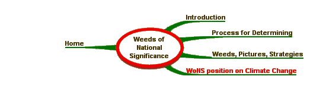

WoNS position on Climate Change
|
WoNS management actions must be readily adaptable to respond to the impacts of climate change. These impacts include changes in distribution and abundance of invasive plants and increased impacts of invasive plants on native ecosystems and primary production. Climate change is listed as a key threatening process under the Environment Protection and Biodiversity Conservation Act 1999. Commonwealth, State and Territory Governments are undertaking adaptation research and developing action plans to reduce the impacts of climate change. The WoNS program supports these overarching plans and will work to incorporate climate change adaptation strategies into invasive plant management programs. Key areas for action include: Limited empirical data exist on the impact of climate change on invasive plants, or weeds. Weeds are likely to be the most successful at adapting to a warmer climate, as they are aggressive primary colonizers. Many WONS have not yet expanded to the full extent in their current predicted range, and this may occur more rapidly in a warmer climate. In addition, current ecosystems may become less resilient to invasion by weeds as climate changes: This may also assist weeds to spread further and become more dominant within their current range. Under warmer climates, WONS eco-climatic ranges are likely to change, thus allowing expansion to new environmental niches, where control options may not be available. More critically, WONS are well-adapted to respond to landscape disturbance caused by the increased frequency and intensity of extreme weather events that will accompany a warmer climate. Events such as cyclones, flooding, drought and fires will become more common and weeds will be the first to gain a stronghold after these events. Genetic plasticity in weeds is poorly understood and this may be compounded as weeds respond to altered environmental cues brought on by climate change (eg. increased humidity may affect seed dormancy). Climate change may affect invasive plants through: SITE MAP
Australian Weeds Strategy | Weed Identification | Australian Weeds Committee |
|
Site Content and Operation: John Thorp Australia Telephone: (03) 6344 9657 Fax: (03) 6343 1877 |
Site Design - Computer Support Tasmania | |
| © Australian Weeds Committee |